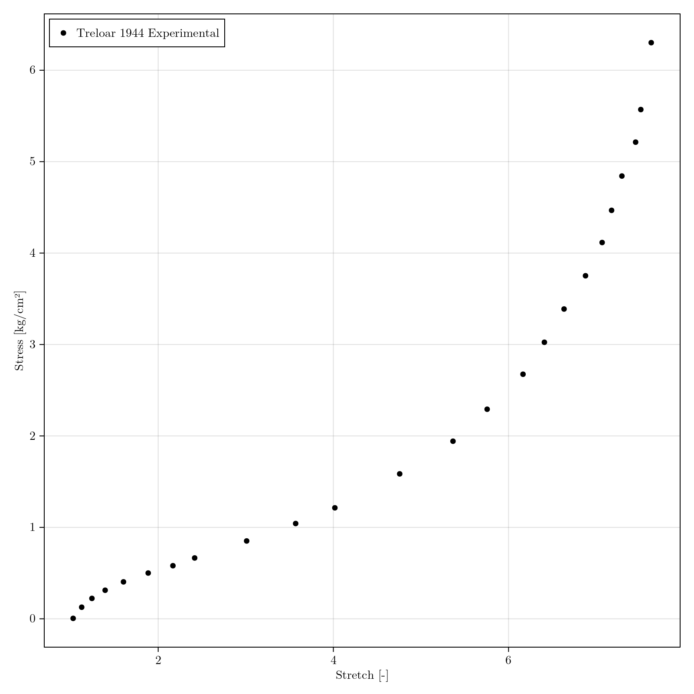
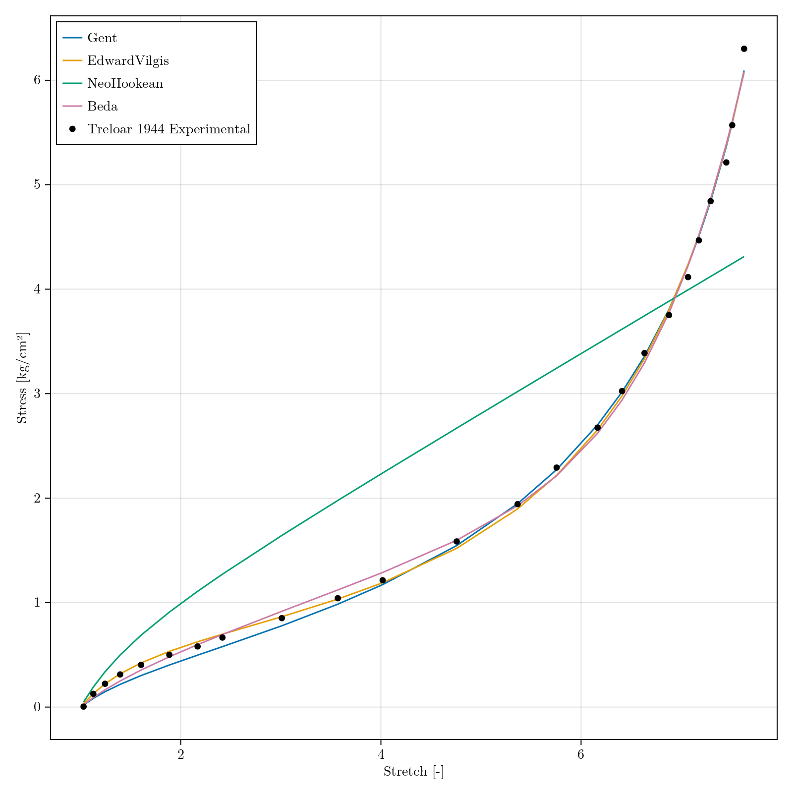
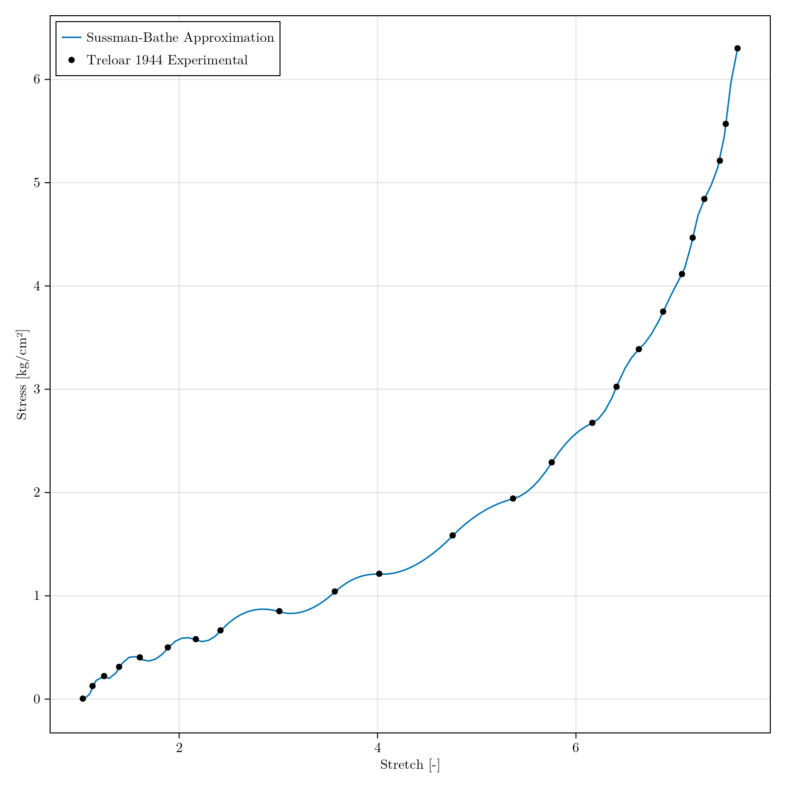

Package Imports
using Hyperelastics
using Optimization, OptimizationOptimJL
using ComponentArrays: ComponentVector
using ForwardDiff
using CairoMakie, MakiePublication
set_theme!(theme_latexfonts())For commonly used datasets in hyperelastic modelling, such as the Treloar1944Uniaxial data, functions are available for getting the datasets:
f = Figure(size = (800,800))
ax = Makie.Axis(f[1,1], xlabel = "Stretch [-]", ylabel = "Stress [kg/cm²]")
treloar_data = Treloar1944Uniaxial()
scatter!(ax,
getindex.(treloar_data.data.λ, 1),
getindex.(treloar_data.data.s, 1),
label = "Treloar 1944 Experimental",
color = :black
)
axislegend(position = :lt)
save("treloar_data.png", f)CairoMakie.Screen{IMAGE}

Multiple dispatch is used on the corresponding function to calculate the values. Based on the model passed to the function, the correct method will be used in the calculation. StrainEnergyDensity, SecondPiolaKirchoffStressTensor, and CauchyStressTensor accept the deformation state as either the principal components in a vector, [λ₁, λ₂, λ₃] or as the deformation gradient matrix, Fᵢⱼ. The returned value matches the type of the input. Parameters are accessed by field allowing for structs, NamedTuples, or other field-based data-types such as those in ComponentArrays.jl and LabelledArrays.jl. For example, the NeoHookean model is accessed with:
ψ = NeoHookean()
λ⃗ = [2.0, sqrt(1/2), sqrt(1/2)]
p = (μ = 10.0, )
W = StrainEnergyDensity(ψ, λ⃗, p)10.0or
F = rand(3,3)
p = (μ = 20.0, )
W = StrainEnergyDensity(ψ, F, p)9.747638835873369A method for creating an OptimizationProblem compatible with Optimization.jl is provided. To fit the NeoHookean model to the Treloar data previously loaded, an additional field-indexed array is used as the initial guess to HyperelasticProblem. It is recommendedto use ComponentArrays.jl for optimization of model parameters.
prob = HyperelasticProblem(ψ, treloar_data, ComponentVector(μ = 0.2), ad_type = AutoForwardDiff())
sol = solve(prob, LBFGS())retcode: Success
u: ComponentVector{Float64}(μ = 0.5665481963398753)For fiting multiple models to the same dataset,
models = Dict(
Gent => ComponentVector(μ=240e-3, J_m=80.0),
EdwardVilgis => ComponentVector(Ns=0.10, Nc=0.20, α=0.001, η=0.001),
NeoHookean => ComponentVector(μ=200e-3),
Beda => ComponentVector(C1=0.1237, C2=0.0424, C3=7.84e-5, K1=0.0168, α=0.9, β=0.68, ζ=3.015)
)
sol = Dict{Any, SciMLSolution}()
for (ψ, p_0) in models
HEProblem = HyperelasticProblem(ψ(), treloar_data, p_0, ad_type = AutoForwardDiff())
sol[ψ] = solve(HEProblem, NelderMead())
endDict{Any, Union{SciMLBase.DESolution, SciMLBase.SciMLSolution}} with 4 entries:
Gent => retcode: Success…
EdwardVilgis => retcode: Success…
NeoHookean => retcode: Success…
Beda => retcode: Success…To predict the reponse of a model to a proivded dataset and parameters, a predict function is provided:
f = Figure(size = (800,800))
ax = Makie.Axis(f[1,1], xlabel = "Stretch [-]", ylabel = "Stress [kg/cm²]")
for (ψ, p) in sol
pred = predict(ψ(), treloar_data, p.u, ad_type = AutoForwardDiff())
lines!(ax, getindex.(pred.data.λ, 1), getindex.(pred.data.s, 1), label=string(ψ))
end
scatter!(ax, getindex.(treloar_data.data.λ, 1), getindex.(treloar_data.data.s, 1), label = "Treloar 1944 Experimental", color = :black)
axislegend(position = :lt)CairoMakie.Screen{IMAGE}

While the majority of the models provided by Hyperelastics.jl are based on closed form strain energy density functions, a selection of data-driven models are proivded. For example, the SussmanBathe model is created with:
using DataInterpolations
ψ = SussmanBathe(treloar_data, k=4, interpolant = QuadraticSpline)
λ₁ = range(extrema(getindex.(treloar_data.data.λ, 1))..., length = 100)
uniaxial_prediction = HyperelasticUniaxialTest(λ₁, name = "Prediction")
pred = predict(ψ, uniaxial_prediction, [])
λ₁ = getindex.(treloar_data.data.λ, 1)
s₁ = getindex.(treloar_data.data.s, 1)
λ̂₁ = getindex.(pred.data.λ, 1)
ŝ₁ = getindex.(pred.data.s, 1)
f = Figure(size = (800,800))
ax = Makie.Axis(f[1,1], xlabel = "Stretch [-]", ylabel = "Stress [kg/cm²]")
lines!(
ax,
λ̂₁,
ŝ₁,
label = "Sussman-Bathe Approximation"
)
scatter!(
ax,
λ₁,
s₁,
label = "Treloar 1944 Experimental",
color = :black
)
axislegend(position = :lt)CairoMakie.Screen{IMAGE}
